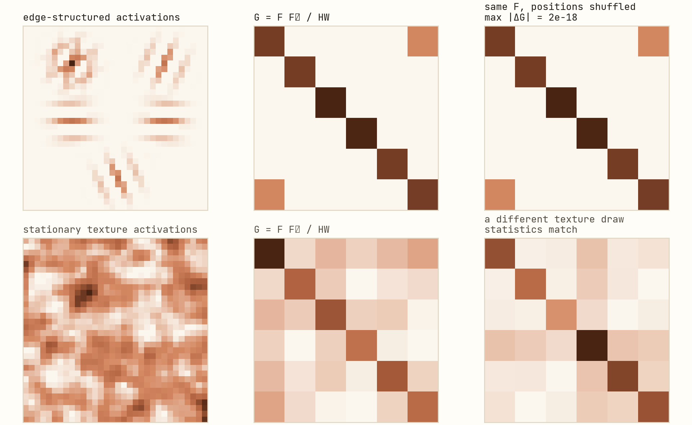
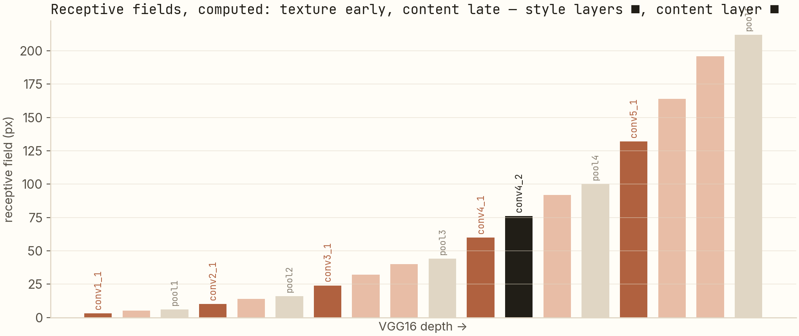

The Gram matrix doesn't care where anything is.
Gatys' 2015 style-transfer paper hinges on one object: the Gram matrix of a CNN's feature maps. I reimplemented it from scratch and found the entire method makes sense the moment you see — algebraically, then measured — that the Gram matrix is a deliberate act of forgetting.
Style transfer synthesizes an image by optimizing pixels against a frozen network — the image is the parameter. Content is "where the features are"; style is "which features co-occur." The Gram matrix G = FFᵀ enforces the second definition by discarding all spatial information — provable by permutation invariance, and I measured it: shuffle every position, G changes by 1.7 × 10⁻¹⁸. Layer choice falls out of receptive-field arithmetic: 3 px at conv1_1 → 196 px at conv5_3.
The inversion
Most deep learning trains a network to fit an image. Gatys et al. (2015) froze the network and fit an image to the network: start from noise, run VGG, compare feature statistics to a content photo and a style painting, and backprop the difference into the pixels. Every result in that paper — and in my reimplementation — comes from what you choose to compare.
For a layer ℓ with C channels and H·W positions, write the feature map as Fℓ ∈ ℝC×HW. Two comparisons define the entire method:
Lcontent = ½ ‖Fℓ(x) − Fℓ(p)‖² · Gℓ = Fℓ(Fℓ)ᵀ / HW
Content loss compares feature maps element-wise — position by position: the activation at location (i, j) should match the photo's activation at (i, j). The style term compares Gram matrices instead, and the Gram matrix is where it gets interesting.
The proof: G is a sum over positions
Unroll the matrix product. With fk the C-dimensional feature column at spatial position k:
G = F Fᵀ / HW = (1 / HW) · Σk=1..HW fk fkᵀ
A sum. Matrix addition commutes — so any permutation of the spatial positions leaves G unchanged, exactly. Destroy the image's layout entirely and the style representation cannot notice. G's entries say "how often does channel i fire together with channel j," and nowhere do they say where. That is the design: texture is precisely the thing that stays the same when you move it around.
I ran the experiment rather than just asserting it. Two synthetic feature tensors — one edge-structured (Gabor-like activations at fixed positions), one stationary texture — and one shuffle of every single position:

The top row is the algebra made physical: the composite activation map is visibly destroyed by the shuffle, and the Gram is untouched to 18 decimal places. The bottom row is why this is the right notion of style: two different draws of a stationary texture produce the same Gram statistics, because they agree on co-occurrence. Texture synthesis by statistics-matching (Gatys' preceding 2015 paper) is exactly this: a homogeneous texture is characterized by its feature covariance — and G is the sample covariance of filter responses.
The gradients
Both losses are quadratic in F, so the gradients are closed-form. Content, by inspection:
∂Lcontent/∂Fℓ = Fℓ(x) − Fℓ(p)
Style, with Eℓ = ‖G(x) − A‖²F (A the style image's Gram; constants fold into per-layer weights): differentiate the trace, use ∂G/∂F, and:
∂Eℓ/∂Fℓ = 2 (G − A) F
Read the shape of that update: the residual (G − A) — which co-occurrences are wrong — is projected back onto the features F, per position, with identical instructions at every location. The style gradient is spatially uniform because the style objective is spatially blind. The content gradient is a per-position correction map. Total loss is α·Lcontent + β·Σℓ wℓEℓ, minimized over pixels with L-BFGS (Gatys' choice; smooth, low-noise objective, a few hundred iterations), plus a small total-variation regularizer to suppress high-frequency pixel noise.
Why style layers are shallow and content layers are deep
Every guide says "use early layers for style, later for content." The reason is arithmetic, and you can compute it. A 3×3 conv grows each neuron's receptive field (RF) by 2 px times the accumulated stride; a 2×2 max-pool doubles the stride. Run the recurrence RFℓ = RFℓ−1 + (k−1)·scum through VGG16:

Now the layer assignment stops being folklore. A neuron with a 3–24 px window can only respond to local texture — brush strokes, weave, grain — and its Gram statistics are texture statistics. A neuron with a 76–196 px window responds to arrangements of parts — where the eyes are relative to the chin — which is exactly the "where" information the content loss needs and the Gram matrix would destroy. The architecture hands you a texture dial and an object dial, and Gatys' layer sets (relu1_1…relu5_1 for style, relu4_2 for content) sit right where this computed table says they should.
What I take from it
- Representation = the invariances you choose. The Gram matrix isn't a clever hack; it's a statement — "for style, position is noise" — implemented in one line of linear algebra. Most design decisions in feature engineering are the same kind of statement, usually left implicit.
- Optimization can replace training. No parameters were learned in the making of any style-transfer image. When the objective is differentiable and the "model" is fixed, synthesis-by-optimization is often cheaper and more controllable than fine-tuning.
- Sanity-check invariants by measurement. The permutation check cost five lines of NumPy and caught nothing — which is itself the result: 1.7 × 10⁻¹⁸ confirms the invariance holds in float arithmetic, not just on the whiteboard.
Reproduce
git clone https://github.com/anubhavagr/neural-style-transfer
cd neural-style-transfer
# content + style -> stylized image, Gatys-style optimization
python transfer.py --content in/content.jpg --style in/style.jpg \
--steps 500 --style-weight 1e6 --content-weight 1
The permutation experiment is
G = F @ F.T / F.shape[1], a rng.permutation on the position axis, and
a np.abs(...).max(). If your Gram moves by more than machine epsilon, your
normalization is wrong — and now you know how to check.
Start the series over: 256 levels is plenty → Repo on GitHub Sibling repo: no_more_BWs